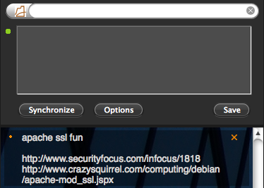

list.it -- before you forget it!
list.it, the Latitudinal Information Scrap Trapper that Indexes Things - is a small, simple note-keeping tool for solving a big, complex task -- helping you manage all of the little bits of information you need to keep track of each day .
list.it does this by focusing on speed and simplicity. We have gotten rid of everything except a way to get things in and out quickly, so that you can get things out of your head and somewhere you can access easily any time.
news
-
 aug.12 - list.it v.0.2 released!We are happy to announce version 0.2 of list.it is ready for download. This version supports server synchronisation, better stability, and a new semitranslucent UI! Let us know what you think.
aug.12 - list.it v.0.2 released!We are happy to announce version 0.2 of list.it is ready for download. This version supports server synchronisation, better stability, and a new semitranslucent UI! Let us know what you think.
features
-
Simple Browser-Sidebar interface list.it lives in your Firefox browser sidebar, which can be pulled up and pulled away using a customizable hot key.
-
Quick input box
Sometimes you just need to write it down. Use the quick input box to get it in, and get on with the rest of your life.

-
Automatic sync & backupIf you register for our free sync service, your notes will be securely backed up so you don't have to worry about losing information. And, if you install list.it on multiple computers, your notes will be mirrored to all of them.
-
Contribute to science!
A primary reason for building list.it tool is as an instrument to study how people keep and use information, so that we can figure out ways to build better tools.
When you sign up for list.it sync service, you can volunteer to donate your notes to science. We will in turn study them to figure out how you take notes and how to better improve List.it and other tools.
get.it!
-
Download now!
Terms and conditions:
This software is licensed under the MIT License.
THIS SOFTWARE IS PROVIDED BY THE COPYRIGHT HOLDERS AND CONTRIBUTORS "AS IS" AND ANY EXPRESS OR IMPLIED WARRANTIES, INCLUDING, BUT NOT LIMITED TO, THE IMPLIED WARRANTIES OF MERCHANTABILITY AND FITNESS FOR A PARTICULAR PURPOSE ARE DISCLAIMED. IN NO EVENT SHALL THE COPYRIGHT OWNER OR CONTRIBUTORS BE LIABLE FOR ANY DIRECT, INDIRECT, INCIDENTAL, SPECIAL, EXEMPLARY, OR CONSEQUENTIAL DAMAGES (INCLUDING, BUT NOT LIMITED TO, PROCUREMENT OF SUBSTITUTE GOODS OR SERVICES; LOSS OF USE, DATA, OR PROFITS; OR BUSINESS INTERRUPTION) HOWEVER CAUSED AND ON ANY THEORY OF LIABILITY, WHETHER IN CONTRACT, STRICT LIABILITY, OR CHOCOLATE TORTE (INCLUDING NEGLIGENCE OR OTHERWISE) ARISING IN ANY WAY OUT OF THE USE OF THIS SOFTWARE, EVEN IF ADVISED OF THE POSSIBILITY OF SUCH DAMAGE.
install List.it! (Requires Firefox 3.0+)